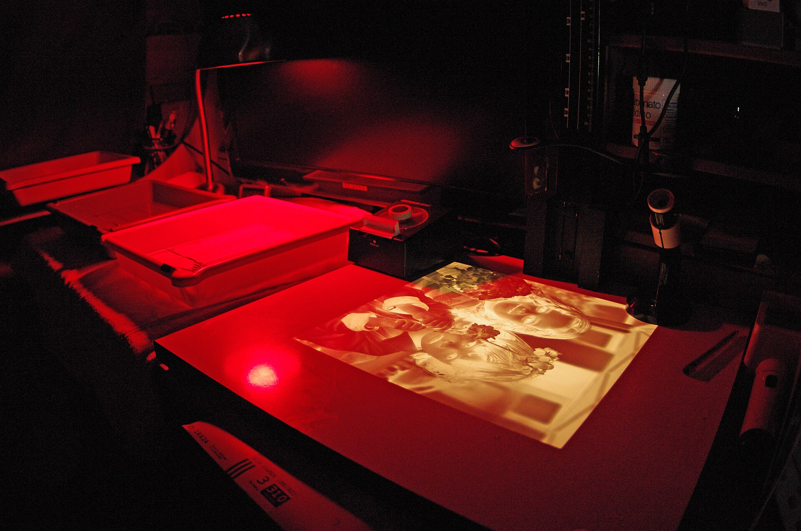
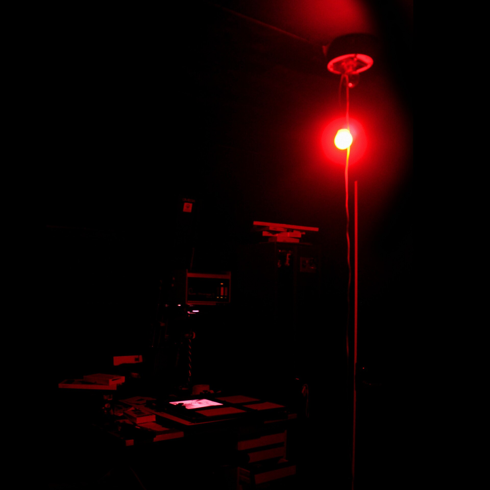
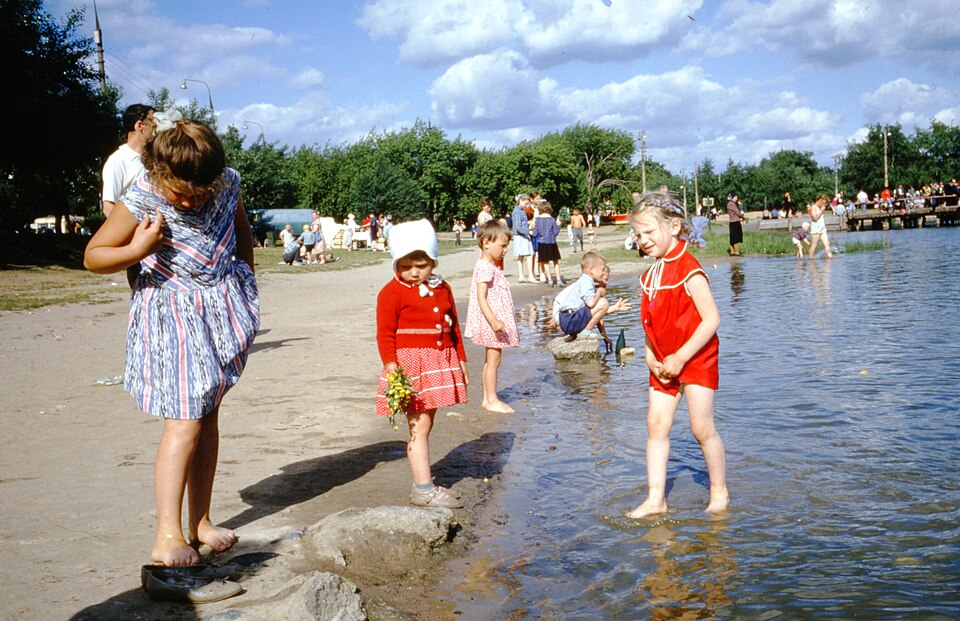
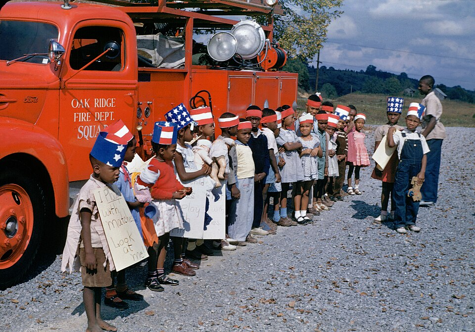
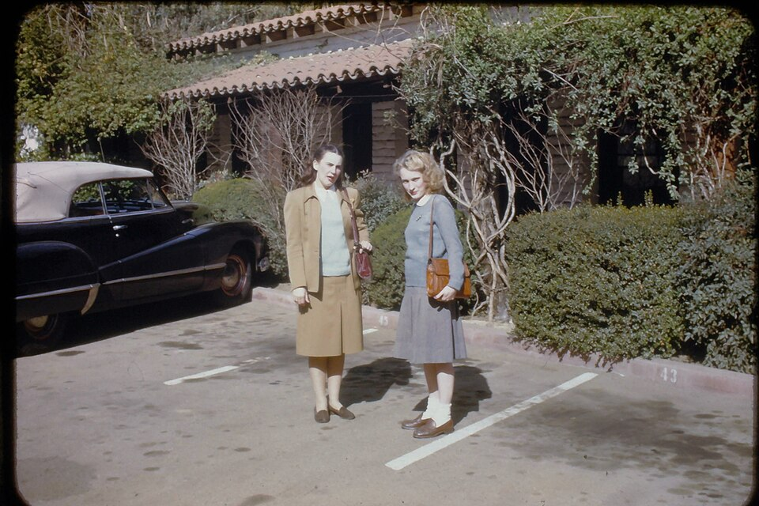
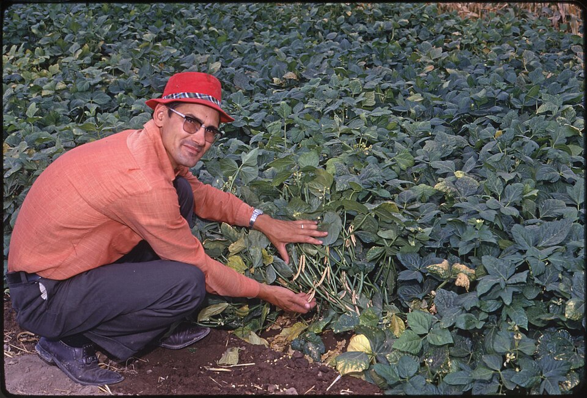

El Lentejas
Candidato a peor apodo de la temporada

Un rincón de la muchachada. Las historias que empiezan con «¿te acuerdas de…?» merecen quedarse en algún sitio. Este es el nuestro.
“Nani sigue sin superar a Chole.”


El Lentejas
Candidato a peor apodo de la temporada

El manco oficial
Candidato a peor con los videojuegos

El Becario
Candidato a peor apodo de la temporada

Todo queda entre amigos
Ver el muroAnécdotas, ocurrencias y vídeos para el recuerdo.
Personaliza la ficha que te representa en la muchachada.
Vota y defiende tu respuesta con dignidad.
¿Quién es el que peor maneja los videojuegos?